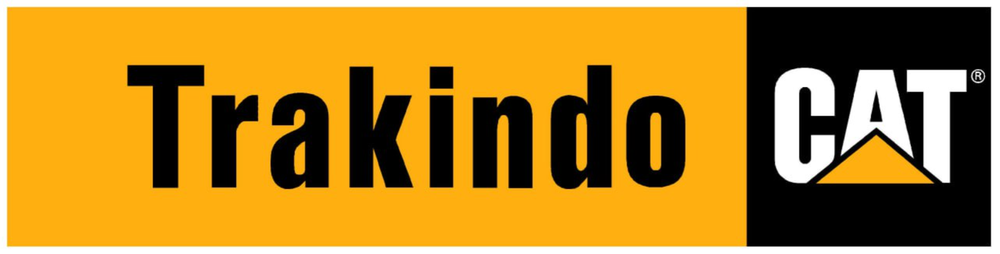

Projector & Conference Camera User Guide
Complete guide to Kandao Meeting Pro projectors and cameras
Complete guide to Kandao Meeting Pro projectors and cameras
Learn how to connect a laptop to a projector.
Set up the Kandao Meeting Pro camera.
Use of the remote and its features.
Solusi untuk masalah umum.
Metode ini adalah cara tercepat untuk terhubung tanpa kabel.
Pada keyboard Anda, tekan tombol Windows + K untuk membuka panel 'Connect'.
Pilih nama proyektor ruang meeting dari daftar yang muncul.

Sambungkan kabel HDMI/VGA dari laptop ke port yang sesuai di proyektor.
Gunakan remote proyektor untuk memilih sumber input (HDMI/VGA). Jika layar tidak tampil, tekan Windows + P dan pilih 'Duplicate'.
Tampilan laptop Anda akan muncul di layar proyektor.
Tekan tombol power, lalu hubungkan kabel USB dari port 'USB OUT' kamera ke laptop Anda.
Buka aplikasi meeting (Zoom/Teams), masuk ke pengaturan Video, dan pilih Kandao Meeting Pro.
Sambungkan kabel HDMI dari kamera ke proyektor, lalu nyalakan kedua perangkat.
Gunakan remote untuk masuk ke pengaturan dan hubungkan kamera ke jaringan WiFi.
Diagram ini menunjukkan alur koneksi lengkap perangkat Kandao Meeting Pro.
Tombol Utama:
Kamera Kandao dilengkapi berbagai fitur cerdas untuk meningkatkan pengalaman rapat Anda.
Pastikan kabel terpasang kencang, sumber input di proyektor sudah benar, dan coba tekan Windows + P lalu pilih 'Duplicate'.
Coba ganti port USB, pastikan Anda memilih "Kandao Meeting Pro" di pengaturan audio & video aplikasi, dan pastikan tidak ada aplikasi lain yang sedang menggunakan kamera.
Penyebab paling umum adalah baterai habis. Coba ganti baterai terlebih dahulu. Pastikan juga tidak ada penghalang antara remote dan kamera.
Masalah hardware: proyektor, kabel, remote, layar.
Masalah software: driver, aplikasi meeting, jaringan/WiFi.
Untuk semua kendala darurat dan pelaporan tiket.